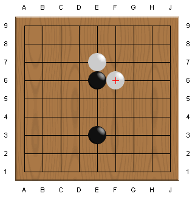
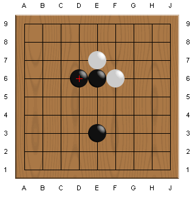
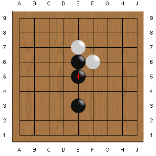
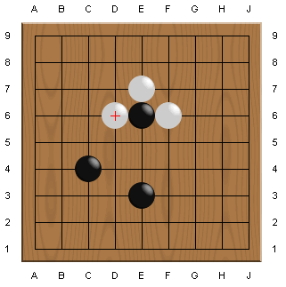

Table Of Contents
Table Of ContentsThis time, you are the attacker.
You touched the white stone at E7 and then white attacked back with F6.
What is the best next move?

When you extend from the stone at E6 by playing D6, you strengthen the stones by increasing your liberties from 2 to 4.

You can also extend toward the bottom as below.
Which direction you should extend depends on the situation.
You don't have to think about it for now but just remember to "extend".

If black didn't extend, what would happen?
Probably, white will attack the stone at E6.
You should have kept attacking white after you played E6, touching E7.

Now practice.
Extend your stone after touching and being slapped.
There are two right answers. Find both of them!
Please remember that an extension move can protect your stones.
 Next
Next
 Home
Home